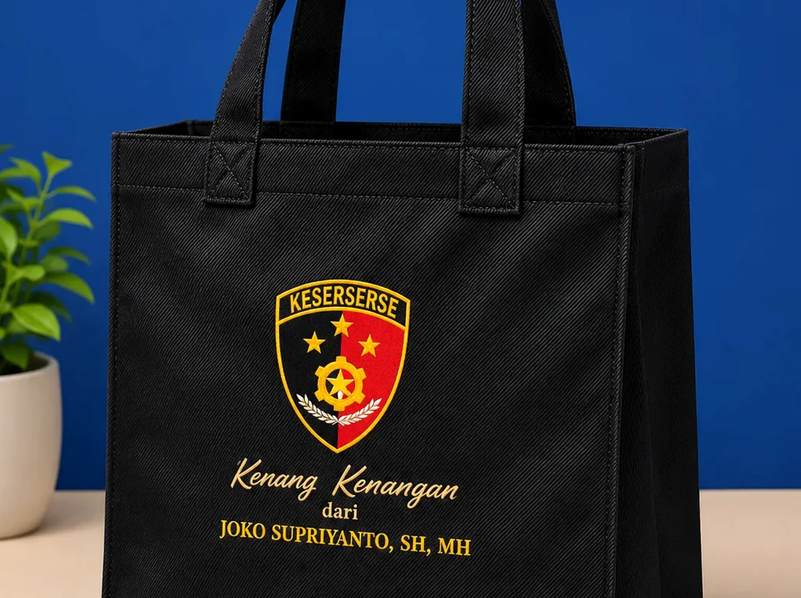

Goodie bag MPLS adalah tas perlengkapan orientasi siswa baru yang dipilih menurut isi paket, anggaran sekolah, kenyamanan membawa, dan manfaat setelah kegiatan.
📌 Ringkasan Inti Panduan:
- Prioritaskan perlengkapan yang benar-benar dibutuhkan selama masa pengenalan lingkungan sekolah.
- Sesuaikan kain, konstruksi jahitan, dan ukuran tas dengan beban nyata dokumen serta buku panduan.
- Gunakan desain identitas sekolah yang jelas dan proporsional tanpa memenuhi seluruh permukaan tas.
- Pisahkan paket berdasarkan kelompok atau kelas agar alur distribusi di hari pertama tidak tertukar.
- Periksa sampel fisik, jadwal produksi, dan jumlah koli sebelum menyetujui pesanan dalam skala besar.
1. Apa Itu Goodie Bag MPLS dan Mengapa Digunakan?
Goodie bag MPLS merupakan wadah untuk mengelompokkan perlengkapan peserta Masa Pengenalan Lingkungan Sekolah agar penerimaan dan penggunaan paket lebih tertib.
Kegiatan pengenalan sekolah melibatkan banyak informasi: buku panduan tata tertib, denah fasilitas sekolah, jadwal orientasi, kartu pengenal kelompok, serta perlengkapan belajar baru. Jika semuanya dibagikan terpisah, siswa baru akan kesulitan membawa atau menyimpannya. Tas seragam membantu menempatkan seluruh dokumen dalam satu kemasan teratur sekaligus memperkuat rasa kebersamaan sebagai keluarga besar almamater baru.
Tujuan utama pengadaan tas MPLS bukanlah menghadirkan bingkisan mewah, melainkan mempermudah mobilitas siswa baru, membantu panitia OSIS dan guru membagikan paket secara cepat, serta menyediakan tas yang bermanfaat untuk membawa buku pelajaran harian atau perlengkapan ekstrakurikuler. Jelajahi juga ragam model tas edukasi di Katalog Tas Sekolah & Komunitas.
2. Apa Saja Isi Goodie Bag MPLS yang Fungsional?
Isi goodie bag MPLS idealnya berupa perlengkapan orientasi yang relevan, seperti buku panduan, alat tulis, kartu identitas kelompok, dan botol minum harian.
Pilihlah barang bawaan berdasarkan agenda resmi sekolah, bukan sekadar mengikuti cinderamata viral di internet. Apabila siswa diwajibkan menulis resume orasi motivasi, sediakan notebook spiral ringkas dan bolpoin ergonomis. Berikut adalah tabel panduan pengelompokan isi tas MPLS:
| Kategori Isi | Contoh Perlengkapan | Alasan Pemilihan | Poin Pemeriksaan QC |
|---|---|---|---|
| Informasi Utama | Buku panduan MPLS, jadwal, denah sekolah | Membantu orientasi fasilitas sekolah | Keterbacaan teks dan revisi dokumen |
| Identitas Siswa | Label nama dada, pita/kartu kelompok | Memudahkan absensi dan barisan | Ejaan nama dan pengait kartu yang aman |
| Perlengkapan Belajar | Buku tulis/notebook, bolpoin, pensil | Mendukung aktivitas pencatatan | Kelancaran tinta dan kualitas kertas |
| Kebutuhan Harian | Tumbler botol minum isi ulang | Mendukung gerakan bebas sampah plastik | Kapasitas volume dan tutup anti-bocor |
| Souvenir Pelengkap | Stiker almamater, gantungan kunci sekolah | Menambah kebanggaan siswa baru | Relevansi tema dan batas biaya |
Simak inspirasi kombinasi paket selengkapnya di artikel panduan Ide Isi Goodie Bag MPLS.

3. Bahan Goodie Bag Apa yang Cocok untuk MPLS?
Bahan goodie bag MPLS perlu dipilih berdasarkan berat barang, frekuensi penggunaan, kemudahan perawatan, dan total anggaran sekolah.
Karakteristik kain menentukan daya tahan fisik tas saat dibawa siswa beraktivitas:
- Spunbond (Polypropylene Nonwoven): Opsi paling ekonomis dan ringan untuk pembagian massal ribuan siswa. Pilihlah gramasi 75 hingga 100 GSM dengan konstruksi jahit benang dan perkuatan tali jinjing. Pelajari di Tas Goodie Bag Spunbond.
- Blacu Katun: Memberikan tampilan natural berserat katun klasik. Sangat pas untuk desain sablon sederhana 1-2 warna dengan nuansa ramah lingkungan. Simak di Tas Blacu Katun Custom.
- Kanvas: Menghadirkan ketebalan maksimal dan struktur tas yang kokoh. Sangat ideal jika sekolah menginginkan tas yang dapat dipakai membawa buku pelajaran berat selama bertahun-tahun.
- Drill & Polyester: Menghadirkan permukaan anyaman diagonal rapi khas seragam sekolah, dengan daya tahan gesek tinggi dan kemudahan dibersihkan.
Pelajari perbandingan teknis antar-material di artikel Bahan Goodie Bag MPLS.
4. Bagaimana Menentukan Ukuran Tas untuk Buku Panduan dan Alat Tulis?
Ukuran tas goodie bag MPLS sebaiknya mengikuti dimensi benda paling lebar dan paling tebal ditambah ruang toleransi bukaan tangan.
Jika sekolah membagikan lembar panduan atau map ijazah berukuran A4 (21 x 29,7 cm), tas harus berukuran minimal 25 x 35 cm untuk model flat. Apabila paket memuat botol minum berdiameter besar dan tempat makan, pilihlah tas dengan lipatan bawah atau samping (gusset) minimal 8–10 cm agar tas tidak menggembung sempit.
Ujilah panjang tali pegangan (handle). Pegangan dengan panjang 45–50 cm pas untuk dijinjing tangan siswa SD/SMP, sedangkan tali sepanjang 55–60 cm sangat nyaman untuk disandangkan ke pundak siswa SMA/SMK.
5. Bagaimana Mendesain Goodie Bag MPLS agar Tetap Berguna Setelah Acara?
Desain tas MPLS paling fungsional menggunakan identitas visual sekolah yang proporsional dan tidak terlalu dominan dengan teks temporer tanggal acara.
Banyak panitia mencetak tulisan "MPLS Tahun Ajaran 2026/2027 Hari Pertama" dalam ukuran font raksasa di bagian tengah tas. Akibatnya, siswa enggan memakainya kembali untuk les atau tas bekal setelah orientasi usai. Solusinya, jadikan logo dan nama sekolah sebagai grafis utama di bagian tengah, sedangkan tema orientasi dapat dicetak kecil di bawah logo atau disematkan pada label gantungan akrilik terpisah.
6. Bagaimana Mengatur Pembagian Goodie Bag untuk Banyak Siswa?
Distribusi goodie bag MPLS berjalan tertib bila paket dikemas rapi per gugus/kelas dan diperiksa sebelum hari pembagian.
Ikuti 5 langkah manajemen distribusi lapangan berikut:
- Validasi Data Peserta: Rujuk data resmi siswa baru per rombel (rombongan belajar) yang telah ditetapkan panitia PPDB.
- Pemisahan Koli Kargo: Minta pihak konveksi membungkus tas dalam kantong plastik per 25 atau 50 pcs dengan label nomor kelas/gugus yang jelas.
- Cek Sampling Koli: Saat barang tiba di sekolah, buka koli acak dan hitung kesesuaian unit fisik sebelum tanda tangan surat jalan.
- Penyiapan Loket Registrasi: Sediakan meja distribusi terpisah untuk setiap gugus agar tidak menimbulkan kerumunan di depan gerbang sekolah.
- Pencatatan Berita Acara: Catat setiap paket yang diserahkan dan simpan stok cadangan di posko panitia pusat.
7. Bagaimana Memilih Vendor dan Mengelola Anggaran MPLS?
Pilihlah vendor goodie bag sekolah melalui perbandingan spesifikasi yang setara, kepemilikan workshop fisik, pengujian sampel, dan ketepatan tenggat waktu.
Pengadaan tas sekolah berskala ratusan hingga ribuan pcs membutuhkan vendor konveksi yang terbiasa menangani faktur pajak institusi serta jadwal ketat awal tahun ajaran. Jangan hanya tergiur harga termurah tanpa memastikan gramasi kain asli dan kekuatan jahitan tali tas. Pelajari tips evaluasi vendor di artikel Vendor Goodie Bag MPLS.
8. Kesalahan Apa yang Perlu Dihindari?
Hindari memutuskan ukuran tas sebelum buku panduan selesai dicetak, memesan tanpa meminta prototipe fisik, dan mencetak nama siswa secara permanen saat data PPDB masih bergerak cair.
Kesalahan lainnya adalah memesan terlalu mepet ke tanggal kegiatan (kurang dari 1 minggu). Pada musim tahun ajaran baru, antrean konveksi meningkat drastis. Berikan jeda waktu pengiriman minimal 5-7 hari sebelum hari H agar panitia memiliki waktu tenang untuk mengisi paket souvenir ke dalam tas.
9. Pertanyaan Umum Seputar Goodie Bag MPLS (FAQ)
10. Kesimpulan Praktis Pengadaan Tas MPLS
Pengadaan goodie bag MPLS yang sukses berpijak pada keselarasan isi paket, kekuatan bahan kain, dan kejelasan alur distribusi. Awali dari inventarisasi perlengkapan nyata, lakukan uji muat sampel tas, serta terapkan identitas logo sekolah yang elegan. Dengan perencanaan terstruktur, tas MPLS tidak hanya mempermudah hari pertama masuk sekolah, tetapi juga menjadi cinderamata bermanfaat yang dibanggakan para siswa baru.

Ditulis oleh Devaliana Tensa
Praktisi konveksi tas, garment merchandiser, dan founder workshop Goodie Bag Malang dengan pengalaman lebih dari 8 tahun dalam produksi tas seminar, goodie bag pameran, dan suvenir custom korporat di Indonesia.
Artikel Terkait Seputar Goodie Bag & MPLS Sekolah